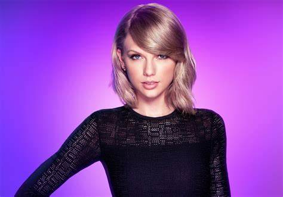
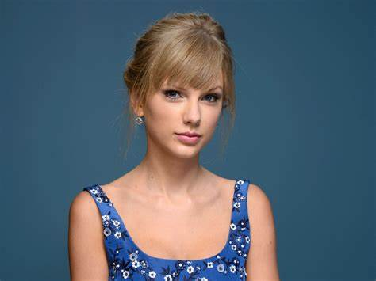

Taylor Swift was born on December 13, 1989. She is a singer, actress, and philanthropist. She is one of the most awarded artists of all time. She also holds the title as the #1 Artist on Spotify.
Taylor's most streamed song of all time is Blank Space. Her recent tour, "The Eras Tour" is the highest grossing tour of all time. The Eras Tour has also broken records for highest concert attendace. This tour has boosted Taylor's net worth significantly, putting her in billionaire status.
 | Pet Name | Attributes |
|---|---|
| Benji | youngest, ragdoll cat, blue eyes |
| Olivia | middle, scottish fold cat, gray eyes |
| Meredith | oldest, scottish fold cat, gray eyes |